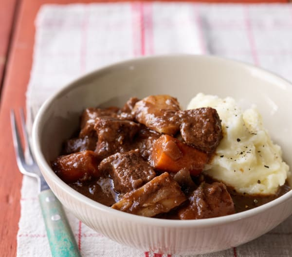

Beef Tips and Merlot Gravy with Beef and Onion Rice
The Merlot in this beef recipe adds depth to the dish.
Back to Main

Ingredients:
- ¼ cup all-purpose flour
- ¼ cup Worcestershire sauce
- 2 tablespoons garlic powder
- ½ teaspoon seasoned salt, or to taste
- 1 pound beef tips (preferably black angus)
- 2 tablespoons vegetable oil, or as needed
- 1 (16 ounce) package sliced fresh mushrooms
- 1 small onion, chopped
- 1 (32 fluid ounce) container beef broth
- 2 (.75 ounce) packets dry brown gravy mix
- 1 tablespoon browning sauce (such as Kitchen Bouquet®)
- ½ teaspoon Worcestershire sauce
- 1 bay leaf
- 1 teaspoon dried parsley
- ¼ cup Merlot wine
- ¼ cup butter
- 1 small onion, chopped
- 1 cup white rice
- 2 (10.5 ounce) cans beef consomme
Directions:
- Whisk flour, 1/4 cup Worcestershire sauce, garlic powder, and seasoned salt in a large bowl until smooth, and toss beef tips in flour mixture to coat. Remove beef with a slotted spoon.
- Heat vegetable oil in a large heavy pan or Dutch oven over medium heat; cook and stir mushrooms and 1 small chopped onion in oil until onion is translucent, about 8 minutes. Stir in seasoned beef tips and cook and stir until beef is browned and no longer pink inside, about 10 minutes.
- Pour in beef broth and whisk dry brown gravy mix into beef mixture until smooth; stir in 1/2 teaspoon Worcestershire sauce, bay leaf, parsley, and Merlot. Bring to a simmer and reduce heat; simmer until gravy has thickened, about 10 minutes. Transfer to a slow cooker, cover, and cook on Low for 8 hours.
- About 25 minutes before serving time, melt butter in a saucepan over medium heat and cook and stir 1 small chopped onion until translucent, about 5 minutes. Stir rice into mixture and pour in beef consommé. Bring to a boil, reduce heat to low, and cover. Simmer rice until tender and liquid is absorbed, about 15 minutes; let rice stand for 5 minutes covered before fluffing with a fork. Serve beef tips and gravy over rice.